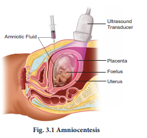
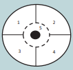
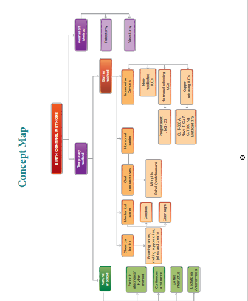

3 point 1 Need for reproductive health Problems and strategies
3 point 2 Amniocentesis and its statutory ban
3 point 3 Social impact of sex ratio, female foeticide and infanticide
3 point 4 Population explosion and birth control
3 point 5 Medical termination of pregnancy (M T P)
3 point 6 Sexually transmitted diseases (S T D)
3 point 7 Infertility
3 point 8 Assisted reproductive technologies (A R T)
3 point 9 Detection of foetal disorders during early pregnancy
1. Understands the importance of sex education and reproductive health.
2. Learns the importance of amniocentesis as a pre-natal diagnosis.
3. Evaluates the effects of maternal and infant mortality.
4. Identifies, compares and explains different types of contraceptive devices.
5. Discusses the medical necessity and social consequences of MTP.
6. Explains the reasons of transmission and prevention of STDs.
7. Highlights the reasons of infertility.
8. Develops a positive and healthy attitude towards reproductive life.
Reproductive health represents a society with people having physically and functionally normal reproductive organs. Healthy people have healthier babies and are able to care for their family, and contribute more to the society and community. Hence, health is a community issue. Reproductive system is a complex system controlled by the neuro-endocrine system; hence, it is important to take necessary steps to protect it from infectious diseases and injury.
India is amongst the first few countries in the world to initiate the ‘Family planning programme’ since 1951 and is periodically assessed every decade. These programmes are popularly named as ‘Reproductive and Child Health Care (RCH). Major tasks carried out under these programmes are:
1. Creating awareness and providing medical assistance to build a healthy society.
2. Introducing sex education in schools to provide information about adolescence and adolescence related changes.
3. Educating couples and those in the marriageable age groups about the available birth control methods and family planning norms
4. Creating awareness about care for pregnant women, post-natal care of mother and child and the importance of breast feeding.
5. Encouraging and supporting governmental and non-governmental agencies to identify new methods and/or to improve upon the existing methods of birth control.
.
Globally, about 800 women die every day of preventable causes related to pregnancy and childbirth; 20 per cent of these women are from India. Similarly India's infant mortality rate was 44 per 1,000 live. Although, India has witnessed dramatic growth over the last two decades, maternal mortality still remains high as in comparison to many developing nations
Health care programmes such as massive child immunization, supply of nutritional food to the pregnant women, Janani Suraksha Yojana, Janani Shishu Suraksha Karyakaram, RMNCH+A approach (an integrated approach for reproductive, maternal, new born, child and adolescent health), Pradhan Mantri Surakshit Matritva Abhiyan, etc., are taken up at the national level by the Government of India.
Due to small family norms and the skewed choice for a male child, female population is decreasing at an alarming rate. Amniocentesis is a prenatal technique used to detect any chromosomal abnormalities in the foetus and it is being often misused to determine the sex of the foetus. Once the sex of the foetus is known, there may be a chance of female foeticide. Hence, a statutory ban on amniocentesis is imposed.
The sex ratio is the ratio of males to the females in a population. In India, the child sex ratio has decreased over the decade from 927 to 919 female for every 1000 males. To correct this ratio, steps are needed to change the mind set and attitudes of people, especially in the young adults. Female foeticide and infanticide is the manifestation of gender discrimination in our society.
Female foeticide refers to ‘aborting the female in the mother’s womb’; whereas female infanticide is ‘killing the female child after her birth’. These have resulted in imbalance in sex ratio. In UNDP’s GII 2018 (United nations developmental programmes gender inequality index) reflected that India was ranked at 135 out of 187 countries due to availability of very few economic opportunities to women as compared to men.
In order to prevent female foeticide and infanticide, Government of India has taken various steps like PCPNDT Act (Preconception and Prenatal diagnostic technique act-1994) enacted to ban the identification of sex and to prevent the use of prenatal diagnostic techniques for selective abortion. Various measures are taken by the Government to ensure survival, provision of better nutrition, education, protection and empowerment of girls by eliminating the differences in the sex ratio, infant mortality rate and improving their nutritional and educational status. POCSO Act (Prevention of children from sexual offences), Sexual harassment at workplace (Prevention, prohibition and redressal) Act and the changes in the Criminal law based on the recommendations of Justice Verma Committee, 2013 aims at creating a safe and secure environment for both females and males.
Increased health facilities and better living conditions have enhanced longevity. According to a recent report from the United Nations, India’s population has already reached 1.26 billion and is expected to become the largest country in population size, surpassing China around 2023. To overcome the problem of population explosion, birth control is the only available solution. People should be motivated to have smaller families by using various contraceptive devices. Advertisements by the Government in the media as well as posters/bills, etc., with a slogan Naam iruvar namakku iruvar (we two, ours two) and Naam iruvar namakku oruvar (we two, ours one) have also motivated to control population growth in Tamilnadu. Statutory rising of marriageable age of the female to 18 years and that of males to 21 years and incentives given to couples with small families are the other measures taken to control population growth in our country.
The voluntary use of contraceptive procedures to prevent fertilization or prevent implantation of a fertilized egg in the uterus is termed as birth control. An ideal contraceptive should be user friendly, easily available, with least side effects and should not interfere with sexual drive. The contraceptive methods are of two types – temporary and permanent. Natural, chemical, mechanical and hormonal barrier methods are the temporary birth control methods.
1. Natural method is used to prevent meeting of sperm with ovum. that is., Rhythm method (safe period), coitus interruptus, continuous abstinence and lactational amenorrhoea.
a. Periodic abstinence/rhythm method Ovulation occurs at about the 14th day of the menstrual cycle. Ovum survives for about two days and sperm remains alive for about 72 hours in the female reproductive tract. Coitus is to be avoided during this time.
b. Continuous abstinence is the simplest and most reliable way to avoid pregnancy is not to have coitus for a defined period that facilitates conception.
c. Coitus interruptus is the oldest family planning method. The male partner withdraws his penis before ejaculation, thereby preventing deposition of semen into the vagina.
d. Lactational amenorrhoea Menstrual cycles resume as early as 6 to 8 weeks from parturition. However, the reappearance of normal ovarian cycles may be delayed for six months during breastfeeding. This delay in ovarian cycles is called lactational amenorrhoea. It serves as a natural, but an unreliable form of birth control. Suckling by the baby during breast-feeding stimulates the pituitary to secrete increased prolactin hormone in order to increase milk production. This high prolactin concentration in the mother’s blood may prevent menstrual cycle by suppressing the release of GnRH (Gonadotropin Releasing Hormone) from hypothalamus and gonadotropin secretion from the pituitary.
In these methods, the ovum and sperm are prevented from meeting so that fertilization does not occur.
a. Chemical barrier
Foaming tablets, melting suppositories, jellies and creams are used as chemical agents that inactivate the sperms in the vagina.
b. Mechanical barrier
Condoms are a thin sheath used to cover the penis in male whereas in female it is used to cover vagina and cervix just before coitus so as to prevent the entry of ejaculated semen into the female reproductive tract. This can prevent conception. Condoms should be discarded after a single use. Condom also safeguards the user from AIDS and S T Ds. Condoms are made of polyurethane, latex and lambskin.
Diaphragms, cervical caps and vaults are made of rubber and are inserted into the female reproductive tract to cover the cervix before coitus in order to prevent the sperms from entering the uterus.
c. Hormonal barrier
It prevents the ovaries from releasing the ova and thickens the cervical fluid which keeps the sperm away from ovum.
Oral contraceptives — Pills are used to prevent ovulation by inhibiting the secretion of FSH and LH hormones. A combined pill is the most commonly used birth control pill. It contains synthetic progesterone and estrogen hormones. Saheli, contraceptive pill by Central Drug Research Institute (C D R I) in Lucknow, India contains a non-steroidal preparation called centchroman.
d. Intrauterine Devices (I, U, D, s)
Intrauterine devices are inserted by medical experts in the uterus through the vagina. These devices are available as copper releasing I, U, D, s, hormone releasing I, U, D, s and non-medicated I, U, D, s. I, U, D, s increase phagocytosis of sperm within the uterus. I, U, D, s are the ideal contraceptives for females who want to delay pregnancy. It is one of the popular methods of contraception in India and has a success rate of 95 to 99 percentage.
Copper releasing I, U, D, s differ from each other by the amount of copper. Copper I U D s such as C u T-380 A, Nova T, C u 7, C u T 380 A g, Multiload 375, etc. release free copper and copper salts into the uterus and suppress sperm motility. They can remain in the uterus for five to ten years.
Hormone-releasing I U D s such as Progestasert and L N G – 20 are often called as intrauterine systems (I U S). They increase the viscosity of the cervical mucus and thereby prevent sperms from entering the cervix.
Non-medicated IUDs are made of plastic or stainless steel. Lippes loop is a double S-shaped plastic device.
3. Permanent birth control methods are adopted by the individuals who do not want to have any more children.
Surgical sterilisation methods are the permanent contraception methods advised for male and female partners to prevent any more pregnancies. It blocks the transport of the gametes and prevents conception. Tubectomy is the surgical sterilisation in women. In this procedure, a small portion of both fallopian tubes are cut and tied up through a small incision in the abdomen or through vagina. This prevents fertilization as well as the entry of the egg into the uterus. Vasectomy is the surgical procedure for male sterilisation. In this procedure, both vas deferens are cut and tied through a small incision on the scrotum to prevent the entry of sperm into the urethra. Vasectomy prevents sperm from heading off to penis as the discharge has no sperms in it.
Medical method of abortion is a voluntary or intentional termination of pregnancy in a non-surgical or non-invasive way. Early medical termination is extremely safe upto 12 weeks (the first trimester) of pregnancy and generally has no impact on a women’s fertility. Abortion during the second trimester is more risky as the foetus becomes intimately associated with the maternal tissue. Government of India legalized MTP in 1971 for medical necessity and social consequences with certain restrictions like sex discrimination and illegal female foeticides to avoid its misuse. MTP performed illegally by unqualified quacks is unsafe and could be fatal. MTP of the first conception may have serious psychological consequences
Approximately half of unintended pregnancies are due to contraceptive failure, largely owing to inconsistent or incorrect use of contraceptive methods. The effectiveness of long-acting reversible contraception (intrauterine devices and contraceptive implants) is superior to that of contraceptive pills, patch, or ring and is not altered in adolescents and young women. Educating young women about the usage of intrauterine devices and contraceptive implants would dramatically reduce the number of unintended pregnancies among women seeking family planning.
Sexually transmitted diseases (S T D) or Venereal diseases (V D) or Reproductive tract infections (RTI) are called as Sexually transmitted infections (S T I). Normally S T I are transmitted from person to person during intimate sexual contact with an infected partner. Infections like Hepatitis-B and HIV are transmitted sexually as well as by sharing of infusion needles, surgical instruments, etc with infected people, blood transfusion or from infected mother to baby. People in the age of 15 to 24 years are prone to these infections. The bacterial STI are gonorrhoea, syphilis, chancroid chlamydiasis and lymphogranuloma venereum. The viral S T I are genital herpes, genital warts, Hepatitis-B and AIDS. Trichomoniasis is a protozoan S T I, and candidiasis is a fungal S T I. S T I caused by bacteria, fungi and protozoa or parasites, can be treated with antibiotics or other medicines, whereas S T I caused by virus cannot be treated but the symptoms can be controlled by antiviral medications. Latex condoms usage greatly reduces the risk, but does not completely eliminate the risk of transmission of S T I.
According to World Health Organization (W H O), 2017 more than one million people globally acquires a sexually transmitted infection every day. India has the third largest HIV epidemic in the world, with 2.1 million people living with HIV.
a. Avoid sex with unknown partner/ multiple partners
b. use condoms
c. In case of doubt, consult a doctor for diagnosis and get complete treatment.
T N H S P (Tamil Nadu health systems project), a unit of the Health and family welfare department of the Government of Tamil Nadu does free screening for cervical and breast cancer.
Table 3 point 1. S T D and their symptoms
Name of the disease |
Causative agent |
Symptoms |
Incubation period |
Bacterial S T I |
|
|
|
Gonorrhoea |
Neisseria gonorrhoeae
|
Affects the urethra, rectum and throat and in females the cervix also get affected. Pain and pus discharge in the genital tract and burning sensation during urination. |
2 to 5 days
|
Syphilis
|
Treponema palladium
|
Primary stage Formation of painless ulcer on the external genitalia. Secondary stage Skin lesions, rashes, swollen joints and fever and hair loss. Tertiary stage Appearance of chronic ulcers on nose, lower legs and palate. Loss of movement, mental disorder, visual impairment, heart problems, gummas (soft non-cancerous growths) etc |
10 to 90 days
|
Chlamydiasis
|
Chlamydia trachomatis
|
Trachoma , affects the cells of the columnar epithelium in the urinogenital tract, respiratory tract and conjunctiva. |
2 to 3 weeks |
Lymphogranuloma venereum
|
Chlamydia trachomatis
|
Cutaneous or mucosal genital damage, urithritis and endocervicitis. Locally harmful ulcerations and genital elephantiasis. |
2 to 3 weeks or upto 6 weeks |
Viral S T I |
|
|
|
Genital herpes
|
Herpes simplex virus
|
Sores in and around the vulva, vagina, urethra in female or sores on or around the penis in male. Pain during urination, bleeding between periods. Swelling in the groin nodes. |
2- 21 days (average 6 days)
|
Genital warts
|
Human papilloma virus (HPV) |
Hard outgrowths (Tumour) on the external genitalia, cervix and perianal region. |
1-8 months
|
Hepatitis-B
|
Hepatitis B virus (HBV)
|
Fatigue, jaundice, fever, rash and stomach pain. Liver cirrhosis and liver failure occur in the later stage. |
30-80 days
|
AIDS
|
Human immunodeficiency virus (HIV)
|
Enlarged lymph nodes, prolonged fever, prolonged diarrhoea, weight reduction, night sweating. |
2 to 6 weeks even more than 10 years.
|
Fungal S T I |
|
|
|
Candidiasis
|
Candida albicans
|
Attacks mouth, throat, intestinal tract and vagina. Vaginal itching or soreness, abnormal vaginal discharge and pain during urination. |
-- |
Protozoan S T I |
|
|
|
Trichomoniasis |
Trichomonas vaginalis
|
Vaginitis, greenish yellow vaginal discharge, itching and burning sensation, urethritis, epididymitis and prostatitis |
4 to 28 days
|
Cervical cancer is caused by a sexually transmitted virus called Human Papilloma virus (HPV). HPV may cause abnormal growth of cervical cells or cervical dysplasia.
The most common symptoms and signs of cervical cancer are pelvic pain, increased vaginal discharge and abnormal vaginal bleeding. The risk factors for cervical cancer include
1. Having multiple sexual partners
2. Prolonged use of contraceptive pills
Cervical cancer can be diagnosed by a Papanicolaou smear (P A P smear) combined with an H P V test. X-Ray, CT scan, MRI and a PET scan may also be used to determine the stage of cancer. The treatment options for cervical cancer include radiation therapy, surgery and chemotherapy.
Modern screening techniques can detect precancerous changes in the cervix. Therefore screening is recommended for women above 30 years once in a year. Cervical cancer can be prevented with vaccination. Primary prevention begins with HPV vaccination of girls aged 9 – 13 years, before they become sexually active. Modification in lifestyle can also help in preventing cervical cancer. Healthy diet, avoiding tobacco usage, preventing early marriages, practicing monogamy and regular exercise minimize the risk of cervical cancer.
Inability to conceive or produce children even after unprotected sexual cohabitation is called infertility. That is, the inability of a man to produce sufficient numbers or quality of sperm to impregnate a woman or inability of a woman to become pregnant or maintain a pregnancy.
The causes for infertility are tumours formed in the pituitary or reproductive organs, inherited mutations of genes responsible for the biosynthesis of sex hormones, malformation of the cervix or fallopian tubes and inadequate nutrition before adulthood. Long-term stress damages many aspects of health especially the menstrual cycle. Ingestion of toxins (heavy metal cadmium), heavy use of alcohol, tobacco and marijuana, injuries to the gonads and aging also cause infertility.
1. Pelvic inflammatory disease (PID), uterine fibroids and endometriosis are the most common causes of infertility in women.
2. Low body fat or anorexia in women. That is a psychiatric eating disorder characterised by the fear of gaining weight.
3. Undescended testes and swollen veins (varicocoele) in scrotum.
4. Tight clothing in men may raise the temperature in the scrotum and affect sperm production.
5. Under developed ovaries or testes.
6. Female may develop antibodies against her partner's sperm.
7. Males may develop an autoimmune response to their own sperm.
All women are born with ovaries, but some do not have functional uterus. This condition is called Mayer-Rokitansky syndrome.
A collection of procedures, which includes the handling of gametes and/or embryos outside the body to achieve pregnancy is known as Assisted Reproductive Technology. It increases the chance of pregnancy in infertile couples. A R T includes intra-uterine insemination (I U I) or Artificial insemination (A I), in vitro fertilization, (I V F) Embryo transfer (E T), Zygote intra-fallopian transfer (Z I F T), Gamete intrafallopian transfer (G I F T), Intra-cytoplasmic sperm injection (I C S I), Preimplantation genetic diagnosis, oocyte and sperm donation and surrogacy.
This is a procedure to treat infertile men with low sperm count. The semen is collected either from the husband or from a healthy donor and is introduced into the uterus through the vagina by a catheter after stimulating the ovaries to produce more ova. The sperms swim towards the fallopian tubes to fertilize the egg, resulting in normal pregnancy.
In this technique, sperm and eggs are allowed to unite outside the body in a laboratory. One or more fertilized eggs may be transferred into the woman’s uterus, where they may implant in the uterine lining and develop. Excess embryos may be cryopreserved (frozen) for future use. Initially, IVF was used to treat women with blocked, damaged, or absent fallopian tubes. Today, IVF is used to treat many causes of infertility. The basic steps in an IVF treatment cycle are ovarian stimulation, egg retrieval, fertilization, embryo culture, and embryo transfer.
Egg retrieval is done by minor surgery under general anesthesia, using ultrasound guide after 34 to 37 hours of h C G (human chorionic gonadotropin) injection. The eggs are prepared and stripped from the surrounding cells. At the same time, sperm preparation is done using a special media. After preparing the sperms, the eggs are brought together.ten thousand to one lakhs motile sperms are needed for each egg. Then the zygote is allowed to divide to form 8 celled blastomere and then transferred into the uterus for a successful pregnancy. The transfer of an embryo with more than 8 blastomeres stage into uterus is called Embryo transfer technique.
Cryopreservation (or freezing) of embryos is often used when there are more embryos than needed for a single I V F transfer. Embryo cryopreservation can provide an additional opportunity for pregnancy, through a Frozen embryo transfer (F E T), without undergoing another ovarian stimulation and retrieval.
As in IVF, the zygote upto 8 blastomere stage is transferred to the fallopian tube by laparoscopy. The zygote continues its natural divisions and migrates towards the uterus where it gets implanted.
Embryo with more than 8 blastomeres is inserted into uterus to complete its further development.
Transfer of an ovum collected from a donor into the fallopian tube. In this the eggs are collected from the ovaries and placed with the sperms in one of the fallopian tubes. The zygote travels toward the uterus and gets implanted in the inner lining of the uterus.
In this method only one sperm is injected into the focal point of the egg to fertilize. The sperm is carefully injected into the cytoplasm of the egg. Fertilization occurs in 75 - 85% of eggs injected with the sperms. The zygote is allowed to divide to form an 8 celled blastomere and then transferred to the uterus to develop a protective pregnancy.
Surrogacy is a method of assisted reproduction or agreement whereby a woman agrees to carry a pregnancy for another person, who will become the newborn child's parent after birth. Through in vitro fertilization (IVF), embryos are created in a lab and are transferred into the surrogate mother's uterus.
Azoospermia is defined as the absence of spermatozoa in the ejaculate semen on atleast two occasions and is observed approximately in 1% of the population.
Microsurgical sperm retrieval from the testicle involves a small midline incision in the scrotum, through which one or both testicles can be seen. Under the microscope, the seminiferous tubules are dilated and small amount of testicular tissue in areas of active sperm production are removed and improved for sperm yield compared to traditional biopsy techniques.
Ultrasound has no known risks other than mild discomfort due to pressure from the transducer on the abdomen or vagina. No radiation is used during this procedure. Ultrasonography is usually performed in the first trimester for dating, determination of the number of foetuses, and for assessment of early pregnancy complications.
There are several types of ultrasound imaging techniques. As the most common type, the 2 D ultrasound provides a flat picture of one aspect of the baby. The 3 D image allows the health care provider to see the width, height and depth of the images, which can be helpful during the diagnosis. The latest technology is 4 D ultrasound, which allows the health care provider to visualize the unborn baby moving in real time with a three-dimensional image.
Amniocentesis involves taking a small sample of the amniotic fluid that surrounds the foetus to diagnose for chromosomal abnormalities (Figure. 3 point 1).

Amniocentesis is generally performed in a pregnant woman between the 15th and 20th weeks of pregnancy by inserting a long, thin needle through the abdomen into the amniotic sac to withdraw a small sample of amniotic fluid. The amniotic fluid contains cells shed from the foetus.
C V S is a prenatal test that involves taking a sample of the placental tissue to test for chromosomal abnormalities.
Foetoscope is used to monitor the foetal heart rate and other functions during late pregnancy and labour. The average foetal heart rate is between 120 and 160 beats per minute. An abnormal foetal heart rate or pattern may mean that the foetus is not getting enough oxygen and it indicates other problems.
BREAST SELF EXAMINATION AND EARLY DIAGNOSIS OF CANCER

1. Breast is divided into 4 quadrants and the center (Nipple) which is the 5th quadrant.
2. Each quadrant of the breast is felt for lumps using the palm of the opposite hand.
3. The examination is done in both lying down and standing positions, monthly once after the 1st week of menstrual cycle.
This way if there are lumps or any deviation of the nipple to one side or any blood discharge from the nipple we can identify cancer at an early stage.
Mammograms are done for women above the age of 40 years and for young girls and women below 40 years, ultrasound of the breast aids in early diagnosis of breast cancer.
A hand-held doppler device is often used during prenatal visits to count the foetal heart rate. During labour, continuous electronic foetal monitoring is often used.
Box item
Vitamin E is known as anti-sterility vitamin as it helps in the normal functioning of reproductive structures.
Sex hormones were discovered by Adolf Butenandt.
11th July is observed as World Population Day.
1st December is observed as World AIDS Day.
N A C O (National AIDS Control Organisation) was established in 1992.
Syphilis and gonorrhoea are commonly called as international diseases.
Reproductive health refers to a total wellbeing in all aspects of reproduction. Providing medical facilities and care to the problems like menstrual irregularities, pregnancy related aspects, medical termination of pregnancy, S T I, birth control, infertility, post-natal child and maternal management are the important aspect of the Reproductive and Child Health Care programmes.
An overall improvement in reproductive health has taken place in our country as indicated by reduced maternal and infant mortality rates, assistance to infertile couples, etc. Improved health facilities and better living conditions promote an explosive growth of population. Such a growth necessitated intense propagation of contraceptive methods. Various contraceptive options are available now such as natural, traditional, barrier, I U D s, pills, injectables, implants and surgical methods. Though contraceptives are not regular requirements for reproductive health, one is advised to use them to avoid pregnancy or to delay or space pregnancy.
Diseases or infections transmitted through coitus are called Sexually transmitted infections (S T I s). Pelvic inflammatory diseases (P I D s), still birth, infertility are some of the complications of S T D s. Early detection facilitates better cure of these diseases. Avoiding coitus with unknown/multiple partners, use of condoms during coitus are some of the simple precautions to avoid contracting S T I s.
Inability to conceive or produce children even after unprotected sexual cohabitation is called infertility. Various methods are now available to help such couples. In vitro fertilization followed by transfer of embryo into the female genital tract is one such method.
1. Which of the following is correct regarding HIV, hepatitis B, gonorrhoea and trichomoniasis?
(a) Gonorrhoea is a S T D whereas others are not.
(b) Trichomoniasis is a viral disease whereas others are bacterial.
(c) H I V is a pathogen whereas others are diseases.
(d) Hepatitis B is eradicated completely whereas others are not.
Answer: (c) H I V is a pathogen whereas others are diseases.
2. Which one of the following groups includes sexually transmitted diseases caused by bacteria only?
(a) Syphilis, gonorrhoea and candidiasis
(b) Syphilis, chlamydiasis and gonorrhoea
(c) Syphilis, gonorrhoea and trichomoniasis
(d) Syphilis, trichomoniasis and pediculosis
Answer: (b) Syphilis, chlamydiasis and gonorrhoea
3. Identify the correct statements from the following
(a) Chlamydiasis is a viral disease.
(b) Gonorrhoea is caused by a spirochaete bacterium, Treponema palladium.
(c) The incubation period for syphilis is is 2 to 14 days in males and 7 to 21 days in females.
(d) Both syphilis and gonorrhoea are easily cured with antibiotics.
Answer: (d) Both syphilis and gonorrhoea are easily cured with antibiotics.
4. A contraceptive pill prevents ovulation by
(a) blocking fallopian tube
(b) inhibiting release of F S H and L H
(c) stimulating release of F S H and L H
(d) causing immediate degeneration of released ovum
Answer: (b) inhibiting release of F S H and L H
5. The approach which does not give the defined action of contraceptive is
(a) |
Hormonal contraceptive
|
Prevents entry of sperms, prevent ovulation and fertilization |
(b) |
Vasectomy |
Prevents spermatogenesis |
(c) |
Barrier method |
Prevents fertilization |
(d) |
Intra uterine device |
Increases phagocytosis of sperms, suppresses sperm motility and fertilizing capacity of sperms |
Answer:
(b) |
Vasectomy |
Prevents spermatogenesis |
6. Read the given statements and select the correct option.
Statement 1: Diaphragms, cervical caps and vaults are made of rubber and are inserted into the female reproductive tract to cover the cervix before coitus.
Statement 2: They are chemical barriers of conception and are reusable.
(a) Both statements 1 and 2 are correct and statement 2 is the correct explanation of statement 1.
(b) Both statements 1 and 2 are correct but statement 2 is not the correct explanation of statement1.
(c) Statement 1 is correct but statement 2 is incorrect.
(d) Both statements 1 and 2 are incorrect.
Answer: (c) Statement 1 is correct but statement 2 is incorrect.
7. Match column 1 with column 2 and select the correct option from the codes given below.
Column 1 Column 2
A. Copper releasing IUD (1) LNG-20
B. Hormone releasing (2) Lippes loop IUD
C. Non medicated IUD (3) Saheli
D. Mini pills (4) Multiload-375
(a) A-(4), B-(2), C-(1), D-(3)
(b) A-(4), B-(1), C-(3), D-(2)
(c) A-(1), B-(2), C-(4), D-(3)
(d) A-(4), B-(1), C-(2), D-(3)
Answer: (d) A-(4), B-(1), C-(2), D-(3)
8. Select the incorrect action of hormonal contraceptive pills from the following
(a) Inhibition of spermatogenesis.
(b) Inhibition of ovulation.
(c) Changes in cervical mucus impairing its ability to allow passage and transport of sperms.
(d) Alteration in uterine endometrium to make it unsuitable for implantation.
Answer: (a) Inhibition of spermatogenesis.
9. Select the correct term from the bracket and complete the given branching tree
(Barriers, Lactational amenorrhoea, Cu T, Tubectomy)
10. Correct the following statements
a) Transfer of an ovum collected from donor into the fallopian tube is called Z I F T.
b) Transferring of an embryo with more than 8 blastomeres into uterus is called G I F T.
c) Multiload 375 is a hormone releasing I U D.
11. Which method do you suggest the couple to have a baby, if the male partner fails to inseminate the female or due to very low sperm count in the ejaculate?
12. Expand the following
a) ejet I F T b) I C S I
13. What are the strategies to be implemented in India to attain total reproductive health?
14. Differentiate foeticide and infanticide.
15. Describe the major S T D s and their symptoms.
16. How are S T D s transmitted?
17. Write the preventive measures of S T D s.
18. The procedure of G I F T involves the transfer of female gametes into the fallopian tube, can gametes be transferred to the uterus to achieve the same result? Explain.
19. Amniocentesis, the foetal sex determination test, is banned in our country, Is it necessary? Comment.
20. Explain the various barrier methods to control human population.
21. Open Book Assessment ‘Healthy reproduction, legally checked birth control measures and proper family planning programmes are essential for the survival of mankind’ Justify.
